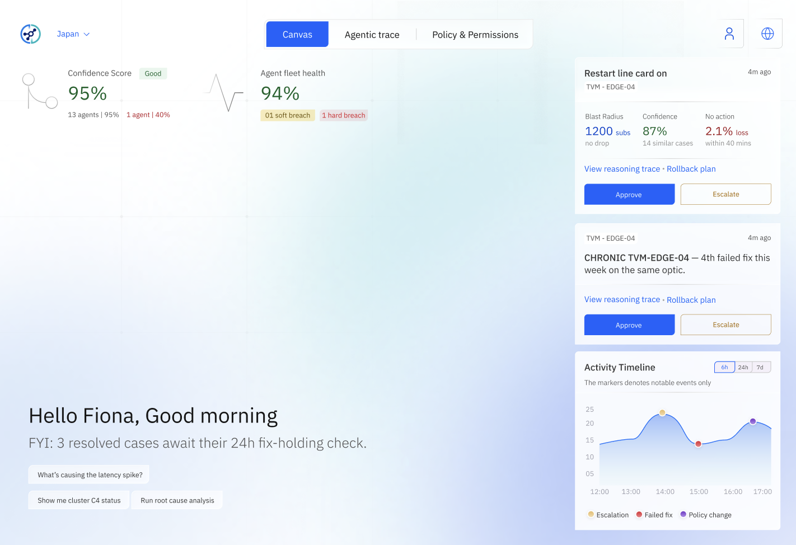

When AI agents work autonomously in the background, the interface disappears. This research explores how designers can create systems built on trust, transparency, and control — without a visible UI driving the work.
Not a UI problemThis is a system design condition the team can address.
Pillars explored
4
● Complete
Design directions
5
Derived from pillars
Team members
5
IBM Design · INI
Rethinking the fundamentals of UX— 4 paradigm shifts
Control01
Human controls every step — agent determines nothing.
In traditional UX, users initiate every action. The interface is a direct expression of human intent at each moment.
Timing02
Synchronous loops — feedback is immediate and expected.
Every action produces a visible response. Waiting is a failure state. Design is built around instant confirmation.
Visibility03
Everything happens on screen — if you can't see it, it didn't happen.
UI is the work. Visibility is assumed. Invisible processes are an anti-pattern — not a feature.
Design Focus04
Arranging visual elements — layout is the primary craft.
Designers compose screens. The output is a visual artefact. Success means the interface looks right and feels right.
01
Canvas view
What is Invisible UI?
Invisible UI is the absence of a traditional interface. The agent acts, decides, and completes tasks entirely in the background — surfacing only when it needs a human decision or something goes wrong.
Core Principles
Event, not request
Agents wake from system signals, not user input
Always running
Continuous operation — no human trigger needed
Actions over answers
Output is a change in the world, not a chat response
Escalate at the edges
Humans involved only for high-stakes decisions
"The best interface is no interface — until the moment a human truly needs to be there."
Pattern named · What & Why
What are Headless AI Agents?
Headless AI agents are AI systems that operate autonomously without a user-facing interface driving their execution. They work quietly in the background, making decisions and taking actions without requiring a human to initiate or oversee each step.
"Before we commit to design — does the agent have a named user, measurable outcome, and evidence of a problem worth solving?"
The Immune System Analogy
Immune System
Monitors body functions continuously
Detects threats automatically
Responds without conscious thought
Escalates when overwhelmed
Learns from past encounters
Headless AI Agent
Monitors systems continuously
Detects anomalies automatically
Responds without user prompts
Escalates complex issues
Learns from patterns
Headless vs. Traditional Chat AI
Traditional Chat AI
Headless AI Agent
Dimension
Traditional Chat AI
Headless AI Agent
Trigger
Request/response loop — waits for user input before acting.
Event-driven — webhooks, cron schedules, DB changes, queues.
State
Conversational state maintained across the session.
Fresh context constructed each invocation — no history.
Output
Natural language text designed to be read by humans.
Actions — API calls, database writes, notifications.
Human role
Human in the loop — oversight and approval at every step.
Autonomous — works continuously without supervision.
Ready to use
02
Do this next
Who's building headless AI
Salesforce AgentforceCRM
Autonomous agents that handle customer service, sales follow-ups, and case routing without human initiation — triggered by CRM events.
ServiceNow AI AgentsITSM
Background agents that auto-triage incidents, resolve known issues, and escalate only when policy thresholds are breached — no ticket required.
Microsoft Copilot StudioEnterprise
Autonomous agents that monitor M365 signals, trigger approvals, and complete multi-step workflows across Teams, Outlook, and Dynamics.
Cisco ThousandEyes AINetwork
Headless observability agents that detect network path degradation, correlate root causes across layers, and auto-remediate without NOC intervention.
Useful words · Characteristics
Four Defining Behaviours
Headless agents share four characteristics that distinguish them from traditional AI systems. Understanding these shapes every design decision you make.
Event Driven
Triggered by webhooks, cron schedules, database changes, or queue messages — not user prompts. The agent wakes when something happens in the system, not when a human types a command.
Triggered by the system, not the user
An event — a database row change, a failed health check, a message in a queue — fires the agent. No human types a prompt. This is a fundamental shift from chatbot design: the entry point is a system event, not a user action.
Timing is owned by the event, not the designer
Cron schedules, webhook payloads, and queue depths determine when the agent runs. Designers cannot predict when the UI surfaces — it may appear at 3am. Design for interruption, not for an open browser tab.
Common event sources
Webhooks from external services (Stripe, GitHub, PagerDuty), Kafka or SQS queue messages, cron expressions, database change streams (CDC), API polling thresholds, and IoT sensor feeds are the primary triggers in production agent systems.
Design the event payload, not the UI form
For event-driven agents, the designer's most impactful artefact is the event schema — what fields it carries, how they are named, and what data is included. A well-designed event payload means less context-building work for the agent on every run.
Real-world example
A network monitoring agent triggers when CPU usage exceeds 85%, analyzes traffic patterns, identifies the source, redistributes load, and logs the action — no engineer required unless auto-recovery fails.
Autonomous
A headless agent operates without a human in the loop. It runs on a schedule or in response to an event, completes its full task, and only surfaces itself when it needs approval or something goes wrong. The designer's job is to define the boundaries of that independence — not remove them.
Runs without prompting
The agent starts from a system event, not a user command. There is no chat interface, no "send" button — it wakes, works, and sleeps on its own cycle.
Acts first, reports after
For routine tasks within its permission scope, the agent acts immediately and surfaces a post-action log. Approval gates are reserved for high-stakes or irreversible decisions only.
Escalates at the edges
When the agent encounters a situation outside its authority or confidence, it pauses and surfaces a clear escalation — not an error. The human steps in only when genuinely needed.
Leaves a record, not a conversation
The primary UI surface for an autonomous agent is its audit trail — what it did, when, why, and with what confidence. This replaces the chat history of traditional AI.
Real-world example
A security compliance agent monitors access permissions across 50+ apps, detects role changes, revokes stale permissions, and grants new ones — 24/7 without security team involvement. The team reviews a daily digest, not a chat thread.
Action Oriented
The output of a headless agent is not text — it is a change in the world. An API was called. A record was updated. A notification was sent. A ticket was created. The agent measures success by what it altered, not what it explained. Design must follow this: surfaces that show results, not conversations.
Output is a system change, not a message
API calls, database writes, webhook dispatches, Slack alerts, ticket creations — these are the agent's outputs. Language is incidental. Design the confirmation surface for actions, not the reply surface for words.
Actions have a risk gradient
Read operations are safe and can run silently. Write operations carry risk and may need a dry-run preview. Destructive or cross-system actions require explicit authorisation. Design autonomy levels to match this gradient.
Reversibility is a first-class design concern
Every action the agent takes should carry a reversibility signal: can this be undone, and by whom? Design undo affordances, rollback windows, and clear before/after diffs in the action record.
Notification is the agent's only voice
When the agent has something to say, it sends a notification — not a chat reply. Design these with the craft of a first-class product surface: clear subject, what triggered it, what was done, and what action is expected next.
Real-world example
An invoice processing agent receives a PDF, extracts structured data, validates it against open POs, writes the approved record to the accounting system, schedules payment, and dispatches a Slack summary — no text response generated at any step.
Context Building
A headless agent has no memory of past conversations. Every invocation starts cold. It pulls the context it needs — from APIs, databases, knowledge graphs, and the triggering event itself — constructing a picture from scratch each time. This is not a limitation; it is by design. It keeps the agent stateless and predictable.
No persistent memory — fresh every run
Unlike a chat assistant that builds on prior turns, a headless agent assembles its full context at the start of each invocation. This makes it auditable: the context for any past run can be fully reconstructed from logs.
Sources: APIs, databases, events, graphs
Context is assembled from external REST APIs, structured databases, vector stores for semantic retrieval, knowledge graphs for relationship traversal, and the triggering event payload itself. Each source adds a layer of meaning.
Context quality determines decision quality
A wrong action is almost always traceable to incomplete or stale context. Designers must surface context health — which sources responded, how fresh the data is, and which lookups failed — as a first-class concern in any agent monitoring UI.
The triggering event is the root context
Whatever woke the agent — a webhook payload, a queue message, a cron tick — is the first and most important piece of context. Design event schemas carefully: poorly structured event payloads lead directly to missing context and failed runs.
Real-world example
A customer enrichment agent wakes on a new CRM lead event. It queries LinkedIn for company size, Crunchbase for funding stage, a news API for recent press, and a vector store for similar past deals — assembling a complete intelligence brief from scratch before scoring the lead.
Conversation ready
03
Useful words
"An agent is not a chatbot. It doesn't respond to messages — it responds to events."
network-agent v2.4.1
Waiting for trigger…
Owner + follow-up · Four Pillars
The Four Pillars
A structural framework for designing trust, transparency, and control into agent-powered systems. These four pillars are the building blocks of every headless AI interface.
Scope & Policy
"Think of the Agent Policy Layer as the agent's immune system blueprint — established before it begins operating."
Goal definitionsWhat is the agent solving for?
GuardrailsWhat is it never allowed to do?
Escalation rulesWhen must it pause for human approval?
SchedulingWhen does it run? (trigger-based, continuous, on-demand)
Trace View
"Think of traces as the agent's thought journal — they reveal how it happened, not just what happened."
Current stateWhat phase is it in right now?
Step-by-step traceEach action with timestamp and output
Decision nodesWhere it chose between paths, and why
Interrupt flagsWhere it paused and what it's waiting for
Confidence indicatorsWhere was it uncertain?
Contextual Chat
"Like asking a specialist for a second opinion. The agent pauses at critical decision points, requests human input, then proceeds — anchored to its own trace."
Activated contextuallyWakes when blocked, uncertain, or needs approval
Edits to live runUser can redirect ongoing process mid-flight
Mid-run policy changesAdjust rules for this run only
Anchored to traceAlready knows what the agent just did
Agent Identity
"Trust and accountability must surface. This answers the W's — who acted, what was the policy, when did it run, why was permission granted."
Name, version, policyWhich agent, under which ruleset?
Audit trailImmutable, exportable record of everything it did
Authorization provenanceWho granted which permissions?
Active session contextWhat is it watching right now?
Agreement visible
04
Owner + follow-up
Scope & Policynetwork-agent v2.4.1
Read telemetryInstana · PrometheusAuto
Read CMDBAsset inventoryAuto
Restart podsNon-protected onlyAsk
Modify BGP policyRoute changesApproval
Cross-tenant QoSBandwidth shapingApproval
Design principle: The permission matrix IS the product spec. Build this before any screen. Every row is a design decision about trust.
Live Traceinvoice-processor · run #0091
Received invoice PDF09:41:02Done
Extracted vendor + amount09:41:04Done
Auto-approve or escalate?Decision nodeNode
Paused — awaiting input09:41:07Blocked
Design principle: Each step is a design surface. Show the timestamp, the outcome, and the confidence — not just "it ran". Traces are the UI for invisible work.
Contextual ChatTriggered at node · step 3
Found anomalous vendor ID #4821. Amount $94,200 exceeds auto-approve threshold. Flag for review or reject outright?
Flag for review. Continue processing the other 31 invoices.
Resumed · #4821 flagged · 31 invoices processing
Design principle: Chat is not the product. It's an emergency hatch — activated only when the agent is blocked. Design it to resolve the moment, then disappear.
Design principle: Every agent action must be traceable to a named human who authorised it. Identity is not metadata — it is accountability made visible.
Evidence in work · Design Directions
Five Design Directions
These are not rules — they are orientations. Each describes a shift in how designers should think when working with headless AI agents. Click any card to reveal the real-world example.
01
Design Logic, Not Layout
Focus on the rules that govern agent behaviour — goals, constraints, permissions, and escalation paths — rather than the arrangement of UI elements.
See example
Example
If the agent flags an anomaly, it must pause and render an "explain reasoning" view before taking action — rather than running in the dark.
02
Build Interfaces That Flex and Deform
Most of the time, only ambient indicators are visible. When something needs attention, detailed diagnostics surface automatically.
See example
Example
The agent runs quietly; when a disruption occurs, it spins up a focused, temporary view — then dismisses it once the moment passes.
03
Proactive by Default, Verify at the Edges
Let agents handle routine tasks autonomously. Involve humans only when decisions carry significant or irreversible impact.
See example
Example
Instead of a form, the agent prepares the change, summarizes impact, and asks for a single approval — "reroute via R2, approve?"
04
Make "Presence" the New Aesthetic
Subtle signals provide confidence the system is functioning. You notice them only when something needs your attention.
See example
Example
A quiet status pulse, or a single changing line — "analyzing options…" — signals the agent is working without cluttering the screen.
05
Test for Trust, Not Just Usability
AI-era metrics must reveal how much users trust the system, feel in control, and choose to delegate to it.
See example
Example Questions
How often do users increase the agent's autonomy level? Do users understand why the agent made a particular decision?
The Paradigm
The designer's job is no longer to arrange elements — it is to orchestrate trust, transparency, and control.
IBM Design Research · 2025
Design Gallery · IBM Network Intelligence4 screens

Invisible UI1
Canvas — Main Dashboard
Ambient confidence · fleet health · activity timeline
Extended categories · model knobs · posture projection
The Team
JK
Jayakrishna Kaimal
Design Manager
DA
Divine Antony
Design Lead
DS
Drron Sharma
UX Designer
AC
Abhiram CS
UX Designer
MS
Mahima Shrivastava
UX Designer
MS
Shagun Bajpai
UX Researcher
Condition restored
05
Evidence in work
Live micro-interaction
Design Logic, Not Layout
Policy evaluation
⬜Check: anomaly score ≥ 0.80—
⬜Guardrail: cross-tenant scope?—
⬜Permission: reroute_traffic—
⬜Escalation: impact > medium?—
⬜Schedule: run window active?—
Rules govern behaviour — not pixels. Click Replay to re-evaluate.
fleet healthy · 47 agents running
99.8% uptime0 escalations41ms p99
⚠ Alertprod-lb-07 · CPU 94%
✓ Context assembled — 3 sources
✓ Anomaly score: 0.94 (threshold 0.80)
⚑ Action: reroute_traffic → needs approval
Interface deforms when attention is needed, collapses when not.
Agent is preparing change…
Proposed action ready
ActionReroute via R2
Impact~180ms blip · 0 dropped pkts
RollbackAuto in 10 min if latency rises
✓
Reroute complete
Agent resumed autonomously
Agent prepares everything. You approve once.
network-intelligence
analyzing options…
99.8%
uptime
47
agents
0
escalations
Agent activity
Quiet confidence — subtle signals only. Presence is the aesthetic.
Autonomy level
Supervised
Assisted
Delegated
Collaborative
Autonomous
Low trustFull trust
Delegation rate12%
Overrides / day18
ComprehensionLow
User reviews every action — trust is not yet established.
Measure trust, not just task completion. Click a level to see AI-era metrics shift.
"Designing for invisible UI is a paradigm shift. The designer's job is no longer to arrange elements — it is to orchestrate trust, transparency, and control."
Interactive prototype
See the headless AI concept in action
Explore a fully interactive dashboard — agentic trace, policy controls, confidence charts, and AI-driven decision flows — built to demonstrate the invisible UI principles from this deck.
Canvas AI inputAgentic tracePolicy & permissionsCase detailLive charts